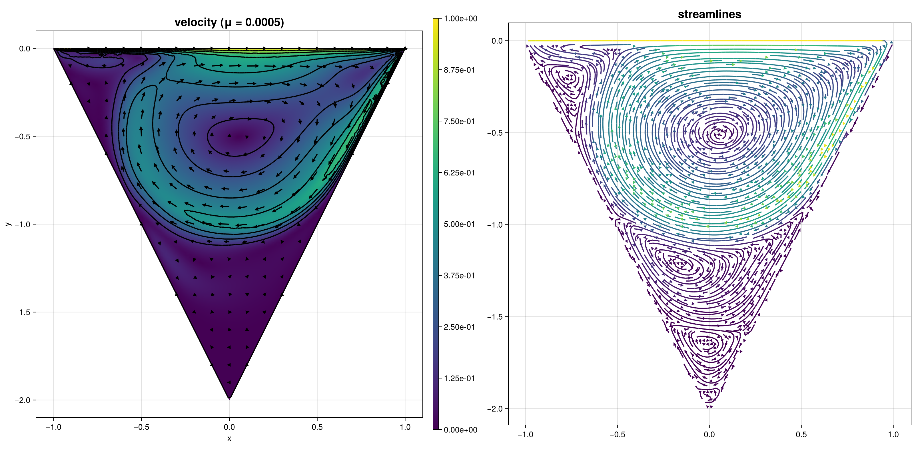

250 : Navier–Stokes Lid-driven cavity
This example computes the velocity $\mathbf{u}$ and pressure $\mathbf{p}$ of the incompressible Navier–Stokes problem
\[\begin{aligned} - \mu \Delta \mathbf{u} + \left(\mathbf{u} \cdot \nabla\right) \mathbf{u}+ \nabla p & = \mathbf{f}\\ \mathrm{div}(\mathbf{u}) & = 0 \end{aligned}\]
in a lid driven cavity example over a cone and plots the solution and the formed eddies.
The computed solution for the default parameters looks like this:

module Example250_NSELidDrivenCavity
using ExtendableFEM
using Triangulate
using ExtendableGrids
using SimplexGridFactory
using LinearAlgebra
using GridVisualize
function create_cone(h)
builder = SimplexGridBuilder(; Generator = Triangulate)
# points
p1 = point!(builder, -1, 0)
p2 = point!(builder, 1, 0)
p3 = point!(builder, 0, -2)
# top face
facetregion!(builder, 1)
facet!(builder, p1, p2)
# other faces
facetregion!(builder, 2)
facet!(builder, p2, p3)
facet!(builder, p3, p1)
cellregion!(builder, 1)
maxvolume!(builder, h)
regionpoint!(builder, 0, -0.5)
return simplexgrid(builder)
end
const ùïÄ = [1 0; 0 1]
function NSE_kernel!(result, u_ops, qpinfo)
u = tensor_view(u_ops, 1, TDVector(2))
v = tensor_view(result, 1, TDVector(2))
∇u = tensor_view(u_ops, 3, TDMatrix(2))
∇v = tensor_view(result, 3, TDMatrix(2))
p = tensor_view(u_ops, 7, TDScalar())
q = tensor_view(result, 7, TDScalar())
μ = qpinfo.params[1]
tmul!(v, ∇u, u)
∇v .= Œº .* ∇u .- p[1] .* ùïÄ
q[1] = -dot(∇u, ùïÄ)
return nothing
end
# boundary function
function u_boundary!(result, qpinfo)
result[1] = 1
result[2] = 0
return nothing
end
function main(;
μ_final = 0.0005, # flow parameter
order = 2, # FE order of the flow field (pressure order is order-1)
h = 1.0e-3, # grid cell volume
nrefs = 1, # additional grid refinements
Plotter = nothing,
kwargs...
)
# prepare parameter field
extra_params = Array{Float64, 1}([max(μ_final, 0.05)])
# problem description
PD = ProblemDescription()
u = Unknown("u"; name = "velocity")
p = Unknown("p"; name = "pressure")
assign_unknown!(PD, u)
assign_unknown!(PD, p)
assign_operator!(PD, NonlinearOperator(NSE_kernel!, [id(u), grad(u), id(p)]; params = extra_params, kwargs...))
# boundary data
assign_operator!(PD, InterpolateBoundaryData(u, u_boundary!; regions = 1))
assign_operator!(PD, HomogeneousBoundaryData(u; regions = [2]))
# grid
xgrid = uniform_refine(create_cone(h), nrefs)
# prepare FESpace
FES = [
FESpace{H1Pk{2, 2, order}}(xgrid),
FESpace{H1Pk{1, 2, order - 1}}(xgrid),
]
# prepare plots
plt = GridVisualizer(; Plotter = Plotter, layout = (1, 2), clear = true, size = (1600, 800))
# solve by μ embedding
step = 0
sol = nothing
SC = nothing
PE = PointEvaluator([id(1)])
while (true)
step += 1
@info "Step $step : solving for μ=$(extra_params[1])"
sol, SC = ExtendableFEM.solve(
PD,
FES,
SC;
return_config = true,
target_residual = 1.0e-10,
maxiterations = 20,
kwargs...
)
if step == 1
initialize!(PE, sol)
end
scalarplot!(plt[1, 1], xgrid, nodevalues(sol[1]; abs = true)[1, :]; title = "velocity (μ = $(extra_params[1]))", Plotter = Plotter)
vectorplot!(plt[1, 1], xgrid, eval_func_bary(PE), rasterpoints = 20, clear = false)
streamplot!(plt[1, 2], xgrid, eval_func_bary(PE), rasterpoints = 50, density = 2, title = "streamlines")
if extra_params[1] <= μ_final
break
else
extra_params[1] = max(μ_final, extra_params[1] / 2)
end
end
scalarplot!(plt[1, 1], xgrid, nodevalues(sol[1]; abs = true)[1, :]; title = "velocity (μ = $(extra_params[1]))", Plotter = Plotter)
vectorplot!(plt[1, 1], xgrid, eval_func_bary(PE), rasterpoints = 20, clear = false)
streamplot!(plt[1, 2], xgrid, eval_func_bary(PE), rasterpoints = 50, density = 2, title = "streamlines")
return sol, plt
end
end # moduleThis page was generated using Literate.jl.